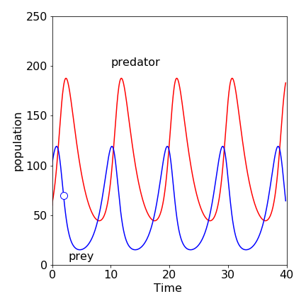
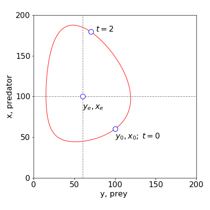
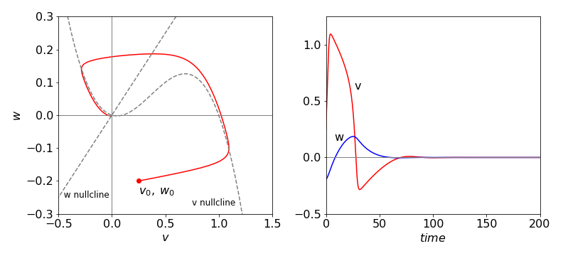
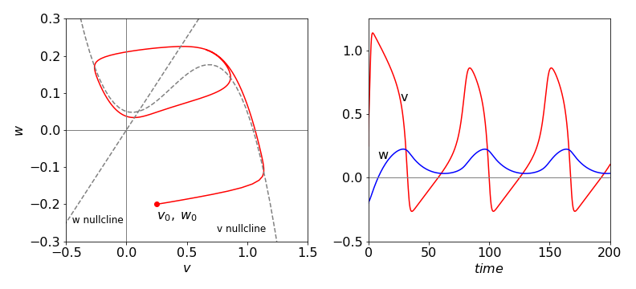
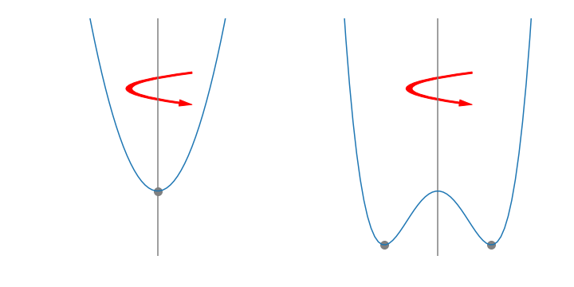

Reaction schemes with feedback
Contents
Reaction schemes with feedback#
Introduction#
Feedback in a chemical reaction implies that there are at least two reactions for which the product of one is the reactant for the other, and vice versa; for example,
Interesting dynamics can be observed in reactions with feedback, because a product that is also a reactant catalyses its own production. There are many such reactions that are now known for example the Belousov - Zhabotinsky ( bromomalonic acid / \(\mathrm{Ru^{2+}\,/\,BrO_3^-}\) and traces of \(\mathrm{BrO_2}\) ) and chlorine dioxide / I\(_2\) / malonic acid reactions, which involve a complex series of coupled chemical reactions inhibiting and also feeding back on one another, and so catalysing the reaction.
Feedback is also common in biology, in the interactions of animals with one another, such as the synchronizing of the flashing of fireflies and of the behaviour of predators and prey. In physiology, the electrical response of nerve and cardiac muscle cells show feedback and the physio-chemical system is termed excitable, meaning that under certain specified conditions, far from equilibrium, oscillations in the concentration of different species, or of electrical impulses can occur. See Scott (1995) for a detailed description of oscillating chemical reactions, and Strogatz (1994) for non-linear processes in general. Examples of a few of these processes are now presented.
8.1 Predator - prey equations#
One of the simplest set of reactions was first studied by Lotka (1925), it involves two species X and Y where some amount of each is present initially.
The amount of species \(Y\) is doubled in the first step and is then lost by reaction with \(X\) to produce more \(X\) in the second. Initially, \(Y\) increases rapidly, but as it does so, the rate of reaction with \(X\) increases. This makes more \(X\) which accelerates the reaction, and \(Y\) is eventually consumed more rapidly than it is formed and its population falls. The population of \(X\) then falls, and the process repeats itself.
Later, Volterra (1926), who was studying the variation of animal populations, described the same set of reactions in this way.
“The first case I have considered is that of two associated species, of which one, finding sufficient food in its environment, would multiply indefinitely when left to itself, while the other would perish for lack of nourishment if left alone; but the second feeds upon the first, and so the two species can coexist together. The proportional rate of increase of the prey diminishes as the number of individuals of the predator increases, while the augmentation of the predator increases with the increase of the number of the prey.”
The longest time series of this oscillatory behaviour appears to be the record of the number of lynx and hare pelts sold by trappers to the Hudson Bay Company in Canada over the period 1848 to 1907. The actual data, while oscillatory, is also rather chaotic, illustrating that the actual behaviour of animals is always going to be rather difficult to model due to the uncontrolled nature of the experiment. Nevertheless, some insight into predator - prey behaviour can be obtained with the rate equations;
where \(Y\) represents a population of prey and \(X\) that of predator. Besides hares and lynx, the creatures could be two types of fish or aphids predated on by ladybirds; you can imagine many other examples.
This model is a great simplification of actual predator - prey interactions; mathematically, the animals are assumed to be so numerous that they can be treated as if they were molecules in a chemical reaction, but more fundamentally, due to the simplicity of their interactions one with another. A more detailed, and necessarily more complex, description is to be found in Britton (2003) and in Murray (2002). Nonetheless, treating the problem as if it were a chemical one, the prey are breeding at a rate \(k_1Y\), the mother producing one offspring in each unit of time. The fuel to do this and driving the whole predator - prey scheme is grass, or similar vegetation, assumed to be in unlimited supply. The rate constant \(k_1\) is therefore really a pseudo-, first-order rate constant and effectively contains a term allowing for the quantity of vegetation available to be eaten. In the second equation the prey is killed at rate \(k_2YX\), which allows the predator to breed. The predators die through natural causes at rate \(k_3X\); however, all the prey are killed by predators and their population does not die off naturally: there is no term \(Y \overset{k_4} \longrightarrow D\), where \(k_4\) is the rate of natural deaths. It is assumed in our model for simplicity only that the rate constant for encounter of prey and predator, \(k_2\), is the same as the rate of birth of predators, which it may not be. All the rate constants are positive numbers.
In a molecular example, the equations have to be changed slightly; the first step becomes
where \(C\) is some compound whose concentration is unchanged during reaction and provides the material and fuel or free energy to form another Y; it is therefore always at vast excess over Y. To make these equations the same as in (11.48), the substitution \(k_1 = k'_{1}C\) is made and so \(k_1\) is a pseudo, first-order rate constant.
The first step in analysing these equations is to calculate the nullclines and steady state conditions that are also called the equilibrium points. Then the phase plane will be calculated, which plots the number density between predator and prey and finally the time profiles of species \(Y\) and \(X\). The initial values to do this will be \(X_0 = 60,\; Y_0 = 100.0,\; k_1 = 1.0,\; k_2 = 0.01,\; k_3 = 0.5\), and time from 0 to 40 units. The unit of time could be in seconds or years; this depends on the situation. We need not specify it here, but clearly, the time would be something of the order of a year for hares and lynx. The numerical calculations used to produce the data in Fig. 19, was based on the Euler algorithm (14) with rate equations defined as
#dydt = lambda y,x : k1*y - k2*y*x # y = prey , x predator eqns 49
#dxdt = lambda y,x : k2*y*x - k3*x}
# in the for loop the increments are
#x = x + h*dxdt(y,x)
#y = y + h*dydt(y,x)
and 500 points were used in the normal Euler method of integration.

Figure 19. The time profiles of the predator \(X\) and prey \(Y\). The prey’s population rises first; the predator population always lags behind. The small circle is at \(t = 2\) and is shown in Figure 20. \(X_0 = 60,\; Y_0 = 100.0,\; k_1 = 1.0,\; k_2 = 0.01,\; k_3 = 0.5\).
The steady state conditions are found when the rate of change of each population is zero;
giving \(Y = X = 0\) as one solution and \(Y_e = k_3/k_2,\; X_e = k_1/k_2\) as the other. The nullclines are the equations produced when the derivatives are zero, and in this instance, they are the horizontal and vertical straight lines crossing the axes at the equilibrium values, \(Y_e\) and \(X_e\). In more complex sets of equations the nullclines could be curves. In Figure 20, the nullclines are plotted as dashed lines. The first equilibrium point at the origin is obvious; no rabbits and no foxes. The second at, \(X_e = 50,\; Y_e = 100\) means that the populations can remain stable given these ratios of rate constants. If the populations are initially different, then they will oscillate in value, ad infinitum, to a greater or lesser extent.
To obtain the phase plane equation, the rate of change of the predator with prey is needed. This is
Separating variables before integrating gives
which evaluates to
with an arbitrary constant \(C\). Although this equation does not explicitly contain time, \(X\) and \(Y\) do change with time. The constant \(C\) is evaluated from the initial conditions and the curve produced moves around the non-zero stable point in an anticlockwise manner.
You can see that the last equation above describing the phase plane is a rather hard one because it is transcendental. We want to plot \(Y\) vs \(X\), but the equation cannot easily be put in the form \(Y = \cdots\). Numerically solving the equation \(k_2Y - k_3\ln(Y) = Q\) for each value of \(X\) where \(Q\) is the value of the right-hand side is very tedious, and is made difficult because the equation produces real as well as complex solutions. The simplest way to draw the phase plane curve is to plot the populations for a particular set of parameters. If EulerX and EulerY are the arrays containing the \(X\) and \(Y\) populations calculated with the Euler method algorithm, then the instructions to plot, say, the first 120 points are shown below with the point at time 2 also plotted as a circle. It is assume that the number of points, \(n\) and \(maxt\) are already defined.
#plt.plot(Eulery[0:120],Eulerx[0:120])
#tt= int(2*n/maxt)
#plt.scatter(Eulery[tt],Eulerx[tt],s=100)
The phase plane curve is closed and orbits the steady state or equilibrium point \((X_e,\, Y_e)\), which means that the oscillations in population continue for ever. If several different pairs of starting population are used, a series of separate closed curves are produced on the phase plane arranged one inside the other, as if they were contours drawn on the inside of a bowl with the equilibrium point at the centre.
The nullclines clearly split the phase plane into four areas and separate populations at their maxima or minima, Fig. 20. In the bottom right quadrant containing the initial population, both predator and prey populations increase. When the prey reaches a maximum, the \(X = 100\) nullcline is crossed vertically, and the predator population increases while the prey decreases. This quadrant contains the point that is also shown in Fig.19. At the \(Y = 50\) vertical nullcline, the predator population peaks. In the next quadrant (top left), both predator and prey population decrease, and in the final quadrant the predator continues to decrease while the prey recovers. It is interesting to note that the average predator lifetime, in the absence of food from prey, is very short at 2 units of time, which is shown on Fig. 19.

Figure 20. Phase plane plot with the parameters \(X_0 = 60,\; Y_0 = 100,\; k_1 = 1, \;k_2 = 0.01,\; k_3 = 0.5\). \(X\) represents the predator, \(Y\) the prey. The equilibrium and initial values are labelled. The circle at t = 2 and vs that at time zero shows that time moves anticlockwise on this plot. (Note that \(X\) is plotted on the vertical axis.)
The closed form of the phase plane curve shows that the populations oscillate periodically, and will continue to do so for ever. If different initial conditions apply, then a similar plot is produced but with larger or smaller amplitudes. In fact there are an infinite number of these all circling the stable point, \(X_e,\; Y_e\). This behaviour is in contrast to the limit-cycle behaviour of some oscillating reactions, as observed with the Fitzhugh - Nagumo equations, Section 8.2. The time profiles, Fig. 19, show that the prey population rises before that of the predator. Initially, the prey (hares) breeds and its population increases exponentially. As the predator (lynx) kills the prey, its population growth is limited, reaches a maximum, and starts to fall. However, the predator population has grown too much, and as there is now less prey, the predator population falls as these die off by natural causes determined by rate constant \(k_3\). Since the predator population has fallen, the prey population, fed on an everlasting amount of grass, can now recover and their population increases and the sequence repeats itself.
This simple model only gives an indication of what may happen between predator and prey. It is a starting point from which a number of interesting questions can be asked about how animals interact in a more realistic way or even as to how ecosystems behave. One simple change to the model is to limit the amount of grass available to the prey, and hence to their total population in the absence of predators.
8.3 Nerve impulses and the Fitzhugh - Nagumo equations#
The biological cell membrane has a potential difference between its inner and outer surfaces. This potential, along with a pH difference, is used by the molecular motor protein ATPase, either to phosphorylate ADP to ATP, or to hydrolyse ATP to ADP. The membrane in its simplest form can be described as a capacitor and resistor in parallel. However, the membrane’s electrical properties are not passive but excitable, which means that if a current impulse above a certain limit is applied, the membrane potential subsequently oscillates continuously. From 1948 to 1952, Hodgkin and Huxley conducted experiments on the axon of the giant squid. These ‘patch-clamp’ experiments were analysed by assuming that channels for Na\(^+\) and K\(^+\) ions existed and that the resistance of the axon was voltage dependent. They modelled this behaviour with four coupled differential equations. Their work, together with that of Eccles received the 1963 Nobel Prize for Medicine.
This model of the membrane was itself subsequently parameterised by Fitzhugh who simplified it into two differential equations. This was possible because different ions transport on different time scales, Na\(^+\) being slow, and rates could be separated on this basis. The equations in reduced form become
The potential \(v\) is the fast responding voltage; \(w\) is the slow (Na\(^+\)) recovery one; \(\alpha,\; \epsilon, \; \gamma\) are constants with \(0 < \alpha < 1,\; \epsilon \ll 1\); and \(C\) is an optional applied current. The \(v\) nullcline is the cubic equation \(w = v(1 - v)(v - \alpha) + C\); the \(w\) nullcline is a straight line \(w = v/\gamma \). These are plotted in Figure 21 as dotted lines with the parameters, \(\alpha = 0.1,\; \epsilon = 0.02\), and \(\gamma = 2\). The starting values for the calculation of the phase plane were \(w_0 = -0.2,\; v_0 = 0.25\), and \(C = 0\), and in Figure 22, \(C = 0.025\).
The equilibrium point where the nullclines meet is the solution of
which is a cubic and has an algebraic solution of great complexity but which is easily evaluated when the constants are given values. In Figure 21, the applied current \(C\) is zero and the response of the nerve is to produce one spike and then a highly damped oscillation in \(v\) and \(w\) signals. The \(v\) and \(w\) signals are calculated numerically using the Euler method, Algorithm 14 and more accurately, with Algorithm 15.
The phase plane shows that the \(v\) signal initially increases far more rapidly than does \(w\), then \(v\) decreases slowly as \(w\) increases following the nullcline, but the response breaks close to the maximum in the \(v\) nullcline. The response then jumps to the other branch of the nullcline that is then followed back to zero about which a few oscillations occur before reaching the stable point. The oscillations are small and difficult to see on the scale of the plot.
When \(C\) is not zero, the \(v\) nullcline is raised and now instead of oscillating about the stable point where the nullclines meet, a limit-cycle is produced and the phase plane continuously cycles the stable point. A limit-cycle means that the parameters controlling the rate equations are such that the same closed curve is produced whatever the initial \(v\) and \(w\) values are. This is an important result because the oscillation frequency becomes a well defined function of the physio-chemical state of the system, whereas in the Lotka - Volterra case the oscillation frequency is arbitrary and changes with the initial conditions given to the differential equations.
When the \(v\) nullcline is raised up sufficiently by a large value of \(C\), the \(w\) nullcline crosses it past its maximum and now the new stable point is formed here rather than near to the lowest point and no oscillations occur; this is not shown and is left as a problem. The limit-cycle is formed when the (stable) point formed, which is where the nullclines cross, is between the maximum and minimum of the \(v\) nullcline.
The current \(C\) was constant in these examples, but it can be pulsed or made into two pulses separated in time, in which case, chaotic behaviour can be produced. A full discussion can be found in Murray (2002).

Figure 21 FitzHugh–Nagumo equation’s phase plane plot and time profile with \(C = 0\) and other values as in the text. The trajectory focuses onto the equilibrium point (0,0) and oscillated about this point although it appears to end here.

Figure 22 FitzHugh–Nagumo equations phase plane plot and time profile with \(C = 0.05\) and other values as in the text. The excitable medium in this case produces a limit-cycle. An equilibrium point occurs where the nullclines cross and is not reached by the trajectory following the limit-cycle.
8.4 Limit-cycles#
In Figures 21 and 22, depending on the starting conditions, the trajectory focuses on the equilibrium point or studiously avoids it. The latter produces a limit-cycle that can most simply be understood by considering the mechanical analogy of a harmonic vs a double well potential. In one dimension they can both be represented by
The harmonic potential has \(a \ge 0\); the double well \(a \lt 0\), Figure 23. Now suppose that these represent a profile cut through a cylindrical surface formed by rotating about the vertical. The trajectory of a ball released anywhere and at any angle on the harmonic surface, \(a \ge 0\), will always reach the minimum. In the double well potential, which has the same equation, but with \(a \lt 0\), has a minimum that forms a valley running around the bottom of the potential and any trajectory will end up here. The path around the minimum is the equivalent to the path followed in the limit-cycle; no matter where the trajectory starts from it will spiral around and end up following the same path. By changing one parameter, a stable equilibrium becomes an unstable one, the former equilibrium position is avoided, and completely different behaviour is observed. The idea of bifurcation now arises naturally, because, by changing one parameter a stable point splits into two, or bifurcates, forming an unstable point and two stable ones. This was met in a mathematical sense with the logistic equation, see Section 1.4.

Figure 23. Two potentials with the form \(V(x) = ax^2 + bx^4\).The parabola has \(b=0\) and the double well with \(b \gt 0\) but with \(a\) negative. The double well has both unstable and stable points. The stable points are indicated by the filled circles.